OpenMW XBOX UI Overhaul
Created by iLikeGothMommys. Unaffiliated with the OpenMW Dev Team.
Latest version: 0.51Dev-Release-V1
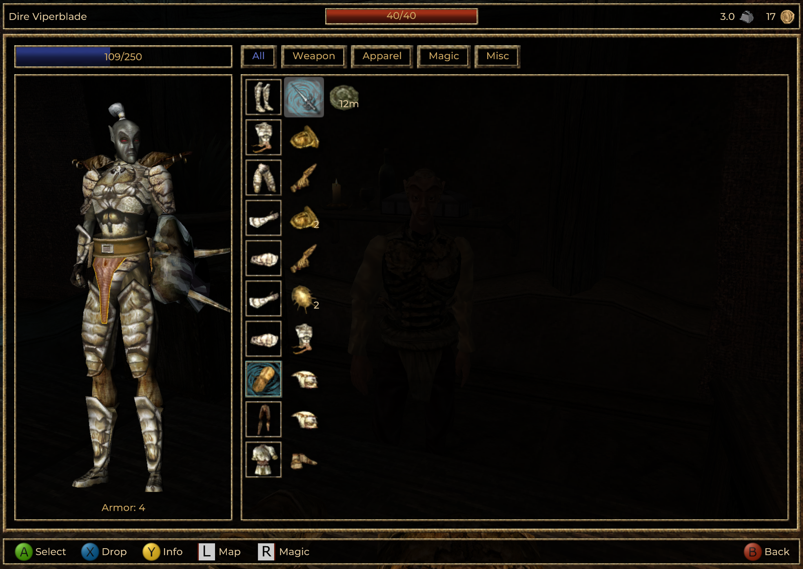
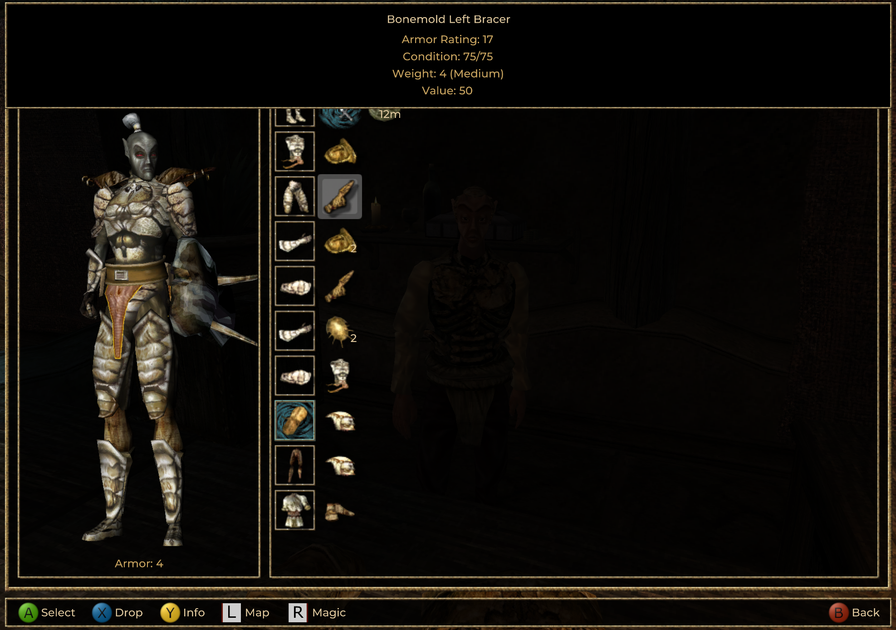
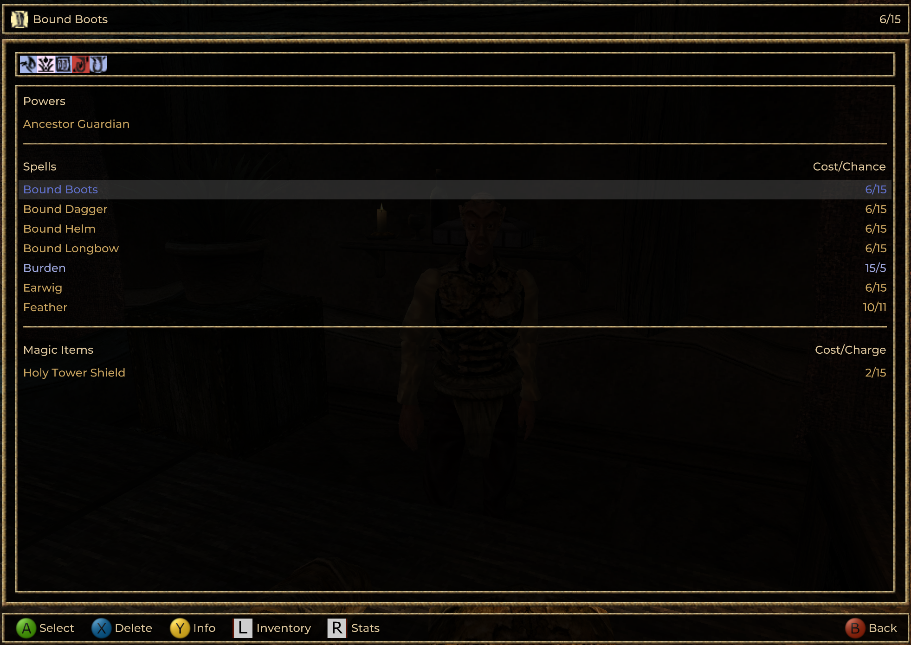
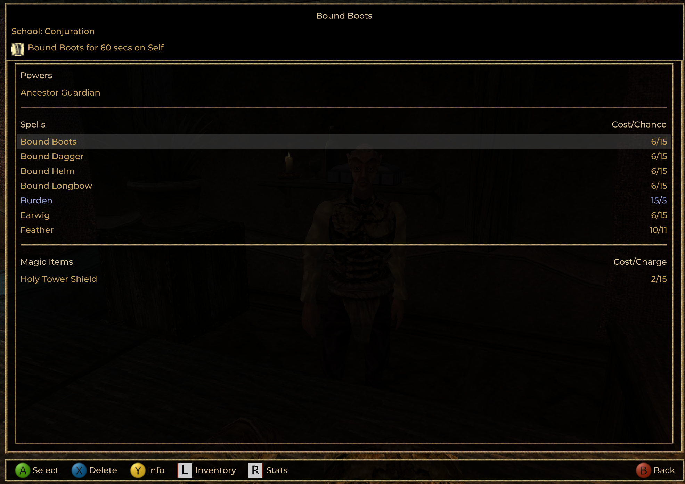
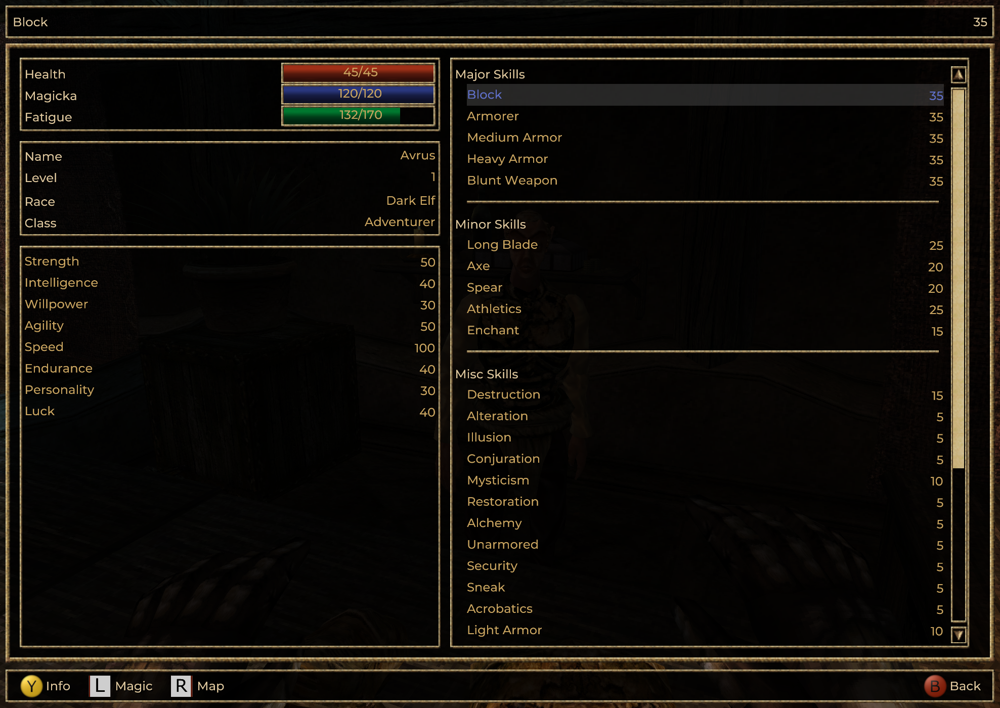
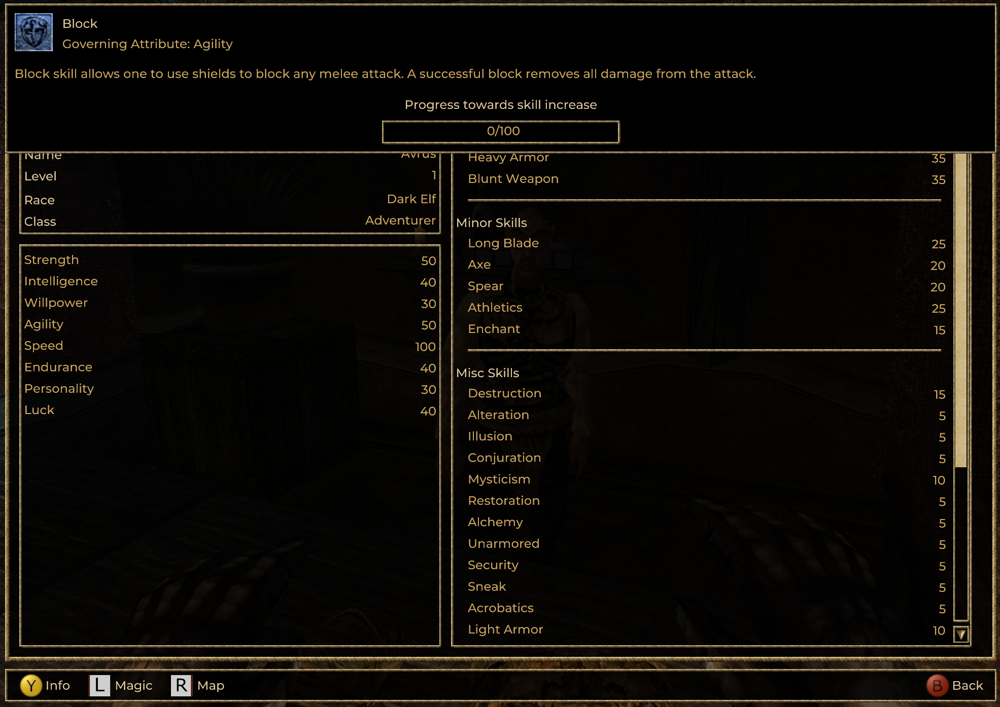
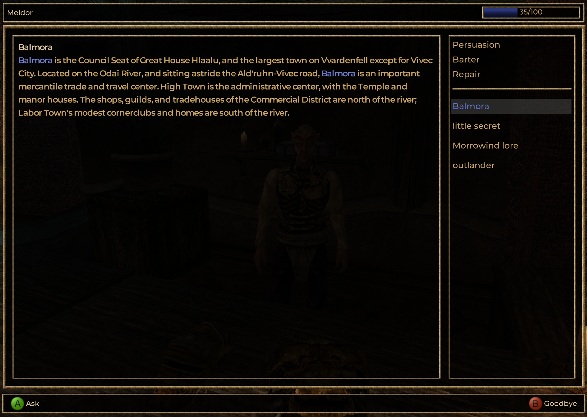
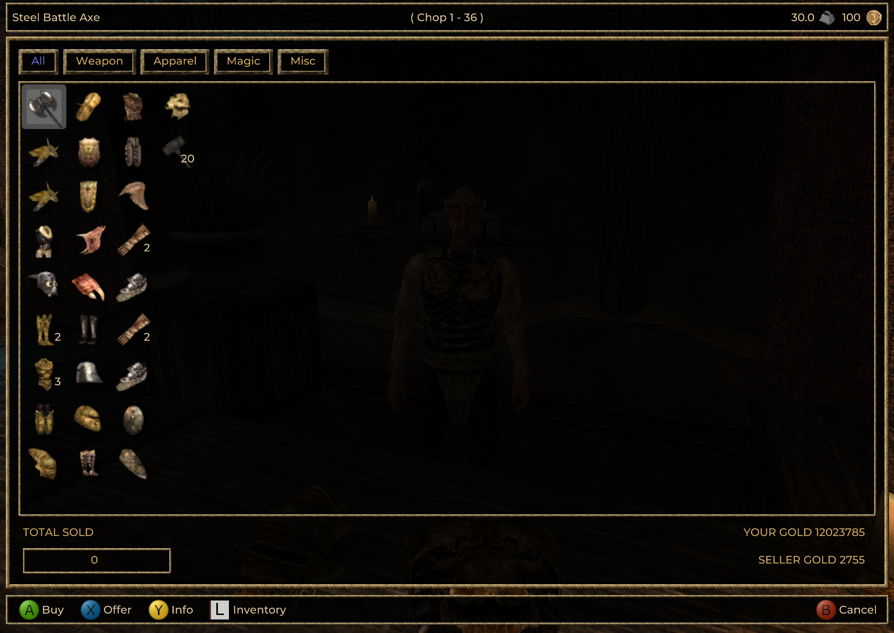
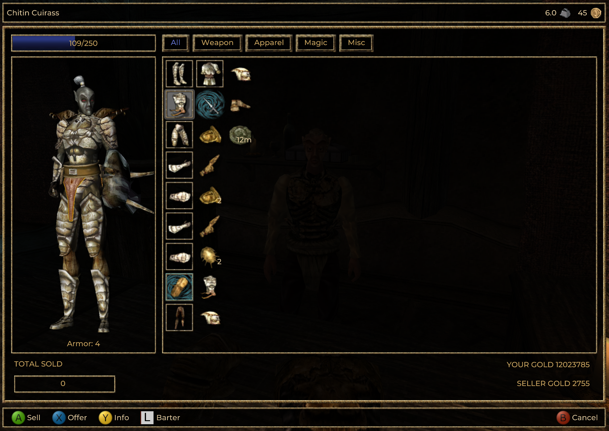
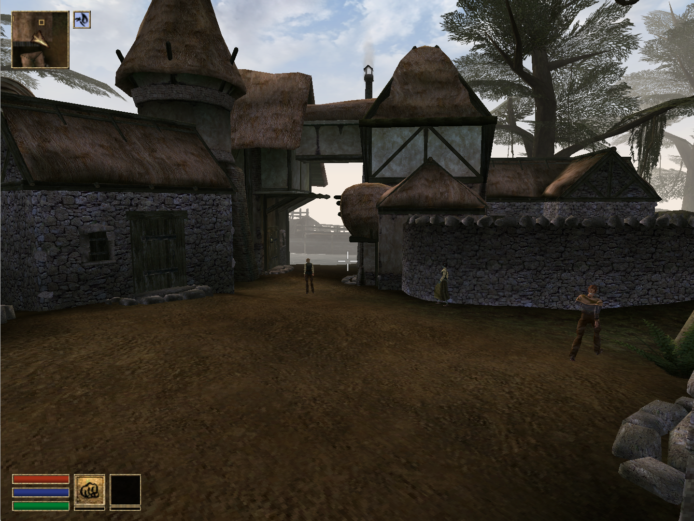
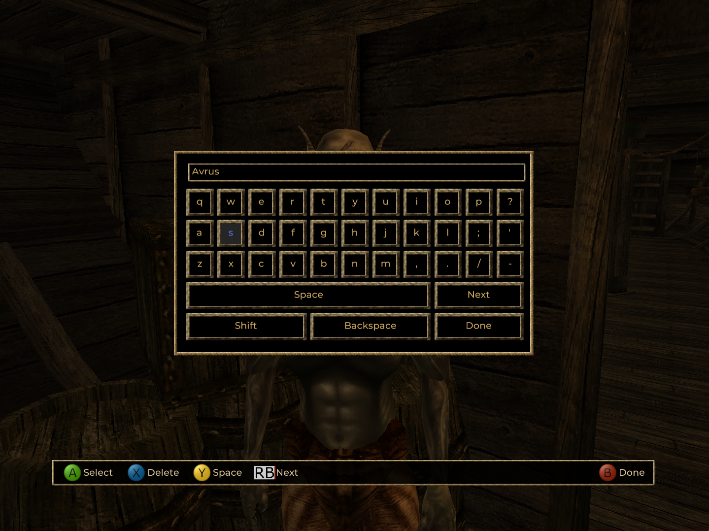
Features
- A near complete port of the OG XBOX UI
- Joystick navigation now works alongside the DPAD navigation.
- Implemented a brand new on-screen keyboard
- Added an optional setting to enable the classic Morrowind water shader.
- Original Xbox tooltip system reimplemented.
- Independent dialog scaling for those who like the dialog menu BIG.
Installation
- Download the latest release.
- Extract to your preferred location.
- Open the directory & launch OpenMW-Launcher or OpenMW and enjoy.
- Add to Steam as a non-steam game or create a desktop shortcut for easier access.
Changelog
- 0.51Dev-Release-V1 -- Initial Release